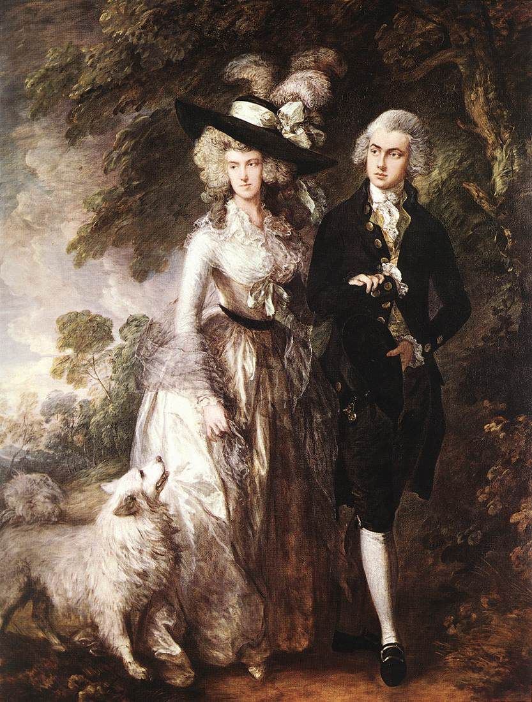
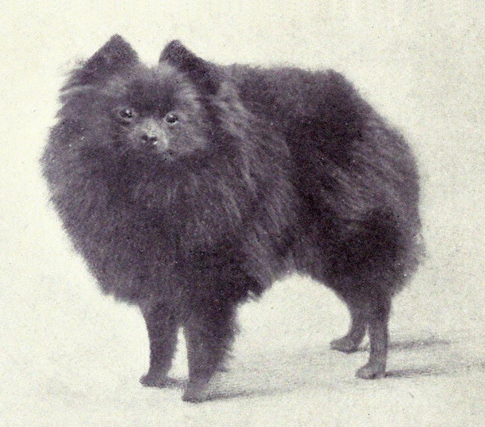

Origins
-  
-
The Pomeranian is considered to be descended from the German Spitz. The breed is thought to have acquired its name by association with the area known as Pomerania which is located in northern Poland and Germany along the Baltic Sea. Although not the origin of the breed, this area is credited with the breeding that led to the original Pomeranian type of dog. Proper documentation was lacking until the breed's introduction into the United Kingdom.
An early modern recorded reference to the Pomeranian breed is from 2 November 1764, in a diary entry in James Boswell's Boswell on the Grand Tour: Germany and Switzerland. "The Frenchman had a Pomeranian dog named Pomer whom he was mighty fond of." The offspring of a Pomeranian and a wolf bred by an animal merchant from London is discussed in Thomas Pennant's A Tour in Scotland from 1769.
Two members of the British Royal Family influenced the evolution of the breed. In 1767, Queen Charlotte, Queen-consort of King George III of Great Britain, brought two Pomeranians to England.
Named Phoebe and Mercury, the dogs were depicted in paintings by Sir Thomas Gainsborough. These paintings depicted a dog larger than the modern breed, reportedly weighing as much as 30–50 lb (14–23 kg), but showing modern traits such as the heavy coat, ears and a tail curled over the back.
Queen Victoria, Queen Charlotte's granddaughter, was also an enthusiast and established a large breeding kennel. One of her favoured dogs was a comparatively small red sable Pomeranian which she possibly named "Windsor's Marco" and was reported to weigh only 12 lb (5.4 kg). When she first exhibited Marco in 1891, it caused the smaller-type Pomeranian to become immediately popular, and breeders began selecting only the smaller specimens for breeding. During her lifetime, the size of the Pomeranian breed was reported to have decreased by 50%. Queen Victoria worked to improve and promote the Pomeranian breed by importing smaller Pomeranians of different colours from various European countries to add to her breeding program. Royal owners during this period also included Joséphine de Beauharnais, the wife of Napoleon I of France, and King George IV of the United Kingdom.
The first breed club was set up in England in 1891, and the first breed standard was written shortly afterwards. The first member of the breed was registered in the United States to the American Kennel Club in 1898, and it was recognized in 1900.
In 1912, two Pomeranians were among only three dogs to survive the sinking of RMS Titanic. A Pomeranian called "Lady", owned by Margaret Bechstein Hays, escaped with her owner in lifeboat number seven, while Elizabeth Barrett Rothschild took her pet to safety with her in lifeboat number six.
Glen Rose Flashaway won the Toy Group at the Westminster Kennel Club Dog Show in 1926, the first Pomeranian to win a group at Westminster. It would take until 1988 for the first Pomeranian, "Great Elms Prince Charming II", to win the Best in Show prize from the Westminster Kennel Club.
In the standard published in 1998, the Pomeranian is included in the German Spitz standard, along with the Keeshond, by the Fédération Cynologique Internationale.
Popularity
-

-
The Pomeranian has been among the more popular dog breeds in the United States, featuring consistently in the top 20 of registered American Kennel Club dog breeds since at least 1998, when it was ranked #10; the breed was #17 in the 2011 rankings, dropping two spots from the previous year. In 2012 and 2013 it remained in the top twenty and was ranked at #19. In 2015, the breed fell to #21, falling further to #22 in both 2016 and 2017.
It is not listed in the top 20 breeds in the UK in either 2007 or 2008. In Australia their popularity has declined since 1986, with a peak of 1,128 Pomeranians registered with the Australian National Kennel Council in 1987; only 577 were registered in 2008. However, this is an increase from 2004, when only 491 dogs were registered.